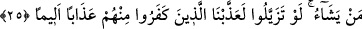

25. Onlar, inkâr eden ve sizin Mescid-i Haram’ı ziyaretinizi ve bekletilen
kurbanların yerlerine ulaşmasını men’edenlerdir. Eğer (Mekke’de) kendilerini
henüz tanımadığınız mümin erkeklerle mümin kadınları bilmeyerek çiğnemeniz
sebebiyle üzüntüye kapılmanız ihtimali olmasaydı (Allah savaşı önlemezdi).
Dilediklerine rahmet etmek için Allah böyle yapmıştır. Eğer onlar birbirinden
ayrılmış olsalardı elbette onlardan inkâr edenleri elemli bir azaba çarptırırdık.
Kâfir olanlar, sizin Mescid-i Hârâm’ı tavaf etmenize engel olanlar, kurbanlıkların
yerine ulaşmasına mâni olanlardır. İmâm Ebû Hanîfe (k.s.) bu âyet-i kerîmeden yola
çıkarak, muhsarın kurbanını[139] haram bölgede kesmesi gerektiğini söylemiştir. Çünkü
Hudeybiye’nin bir kısmı haram bölgeye dahildir.
Bahrü’l-ulûm adlı eserde denir ki: Hudeybiye Mekke’den 9 mil uzaklıkta bulunan,
haram bölgenin bir kısmıdır. Rivâyet edildiğine göre, Efendimiz (s.a.)’in çadırları helâl
mahalde, namazgâhı ise haram bölgedeydi. Rasûl-i Ekrem (s.a.)’in kurbanlıkları bu
haram bölgede kurban edildiler. Bunlar yetmiş deve idi. Âyet-i kerîmede geçen
engellemeden maksad ise, daha önceden kesilmesi düşünülmüş, kararlaştırılmış yere
bırakılmamalarıdır. Bu yer ise hacılar için Mina, umre yapanlar için ise Safa’dır.
İmam Şâfii’ye göre ise, muhsarın kurbanlığını haram bölgede kesmesi zorunlu
değildir. Nerede engellemeyle karşılaşmışsa orada kesebilir.
Allah Teâlâ, kâfirlerin cezayı hak etmelerinin üç sebebe dayandığını açıklamaktadır.
Kâfir olmaları, mü’minlerin umrelerini tamamlamalarına müsade etmemiş olmaları ve
kurbanlıklarının kesilmeleri gereken yere varmasına engel olmaları sebebiyledir. Onlar
bu şenî hareketlerine karşılık savaşılmayı ve öldürülmeyi hak etmişlerdir. Fakat Allah
Teâlâ tarafların savaşmasına müsaade etmedi. Tabii ki bundan maksad, Mekke’de
kalmış zayıf müslümanları korumak ve onların oradan çıkmalarını sağlamaktı. Veya
Mekke’ye, müslümanların, orada bulunan müslümanlara eziyet edilmeden girmelerini
gerçekleştirmekti. Nitekim bir sonraki âyet bunu açıklamaktadır.
“Kafirlerle beraber oldukları için şahsen tanımadığınız mümin erkekler ve mü’min
kadınlar olmasaydı” Burada kastedilenler îmânlarını gizlemekte olan ve Mekke’de
ikâmet eden yetmiş iki kişiydi.
Sa’dî Müftî der ki; “Hanefî mezhebine göre, bu durumdaki müslümanları bilmeden
öldüren kişiye diyet, keffaret vb. bir şey gerekmez. Zemahşerî’nin ifâde ettiği ise
mezhebine uygun değildir”.
Bazıları der ki: Da’ru’l-harb’de bulunan bir müslümanı, bir başka müslüman,
müslüman olduğunu bilmeden öldürürse, Allah o kişi için keffâreti vâcib kılmıştır.
Nitekim Allah Teâlâ şöyle buyurur: “Eğer öldürülen kişi, sizinle düşman olan bir
kavme mensub ise ve mü’min ise (bu durumda) öldüren kişiye bir mü’min köleyi
azâd etmesi vâcib olur”. (Nisâ’, 4/92)